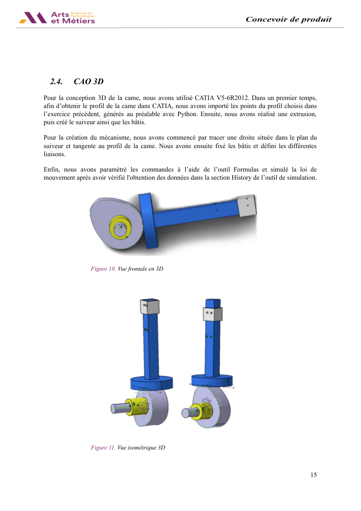
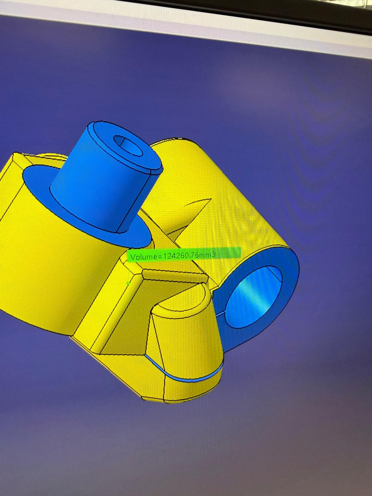
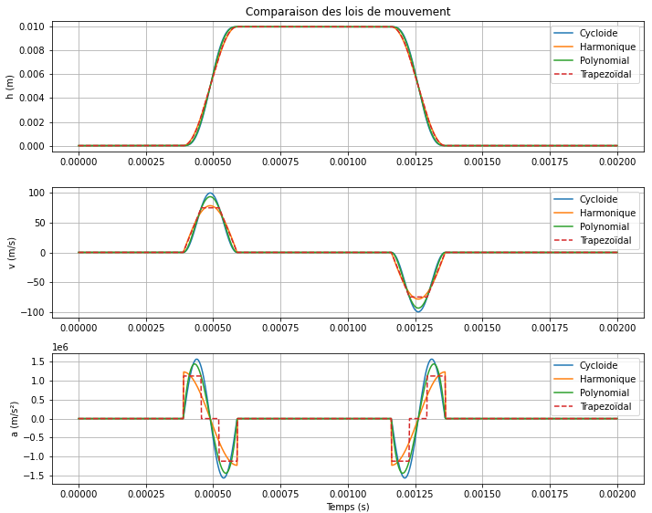
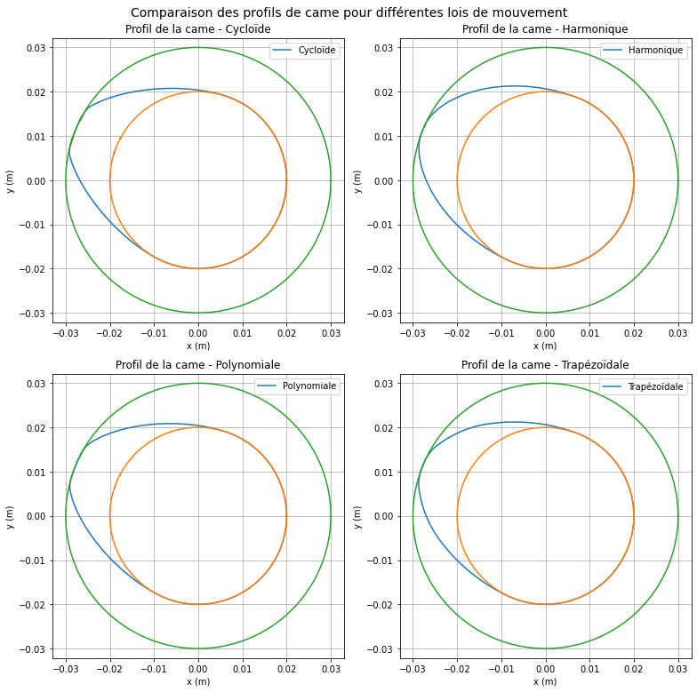
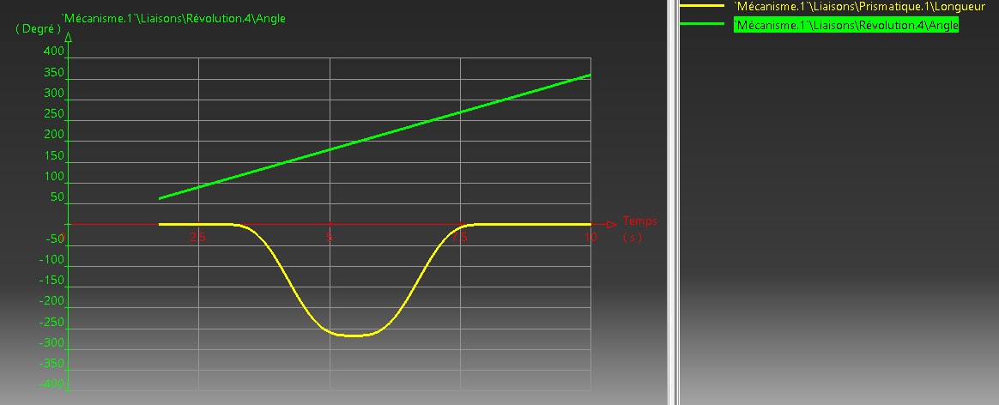
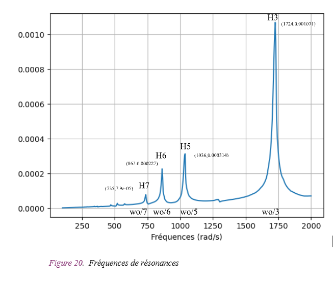

Valve Actuation Cam - Kinematic Design, CAD & Dynamic Analysis
Design and validation of a valve-actuation cam for a four-stroke engine: motion-law comparison in Python, CATIA 3D modeling, contact sizing and dynamic response analysis.

From motion laws to a validated mechanism
Collaborative engineering design study of a cam operating an intake valve for the SIMCA 1000 Rallye 2 engine. The team modeled cycloidal, harmonic, fifth-order polynomial and trapezoidal velocity laws in Python, comparing displacement, velocity and acceleration profiles to select an appropriate lift law.
Engineering workflow
Generated the cam profile numerically, transferred coordinates into CATIA V5 and assembled the cam-follower mechanism for kinematic simulation. Compared the Python and CATIA trajectories after time normalization. Evaluated return-spring stiffness, contact forces and Hertz contact pressure, then studied a single-degree-of-freedom dynamic model and its harmonic resonance response.
Findings
The reported study selected the cycloidal motion law to limit acceleration discontinuities, and demonstrated agreement between numerical predictions and CATIA simulation after time alignment. These are group results, not individual performance claims.

Motion laws and validation
Figures taken from the original report. Click to enlarge.







